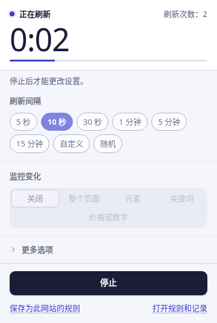
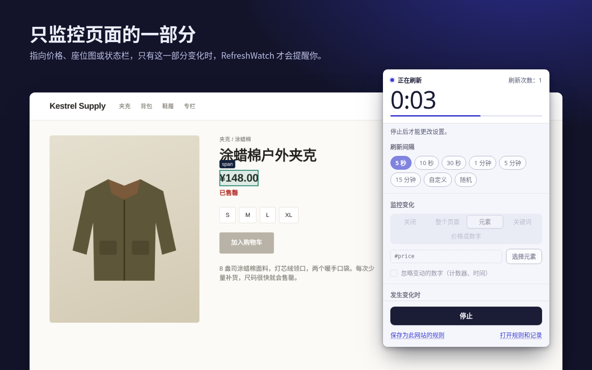
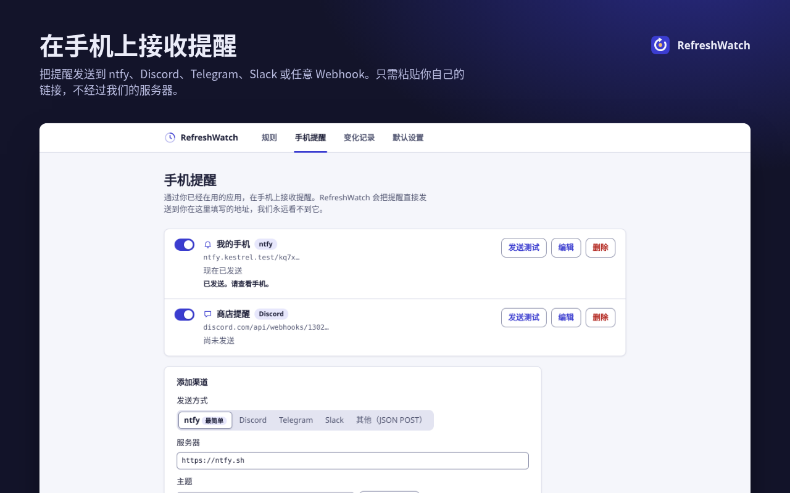
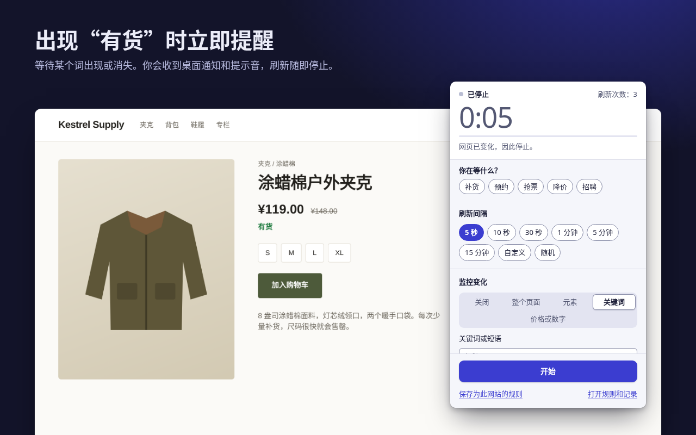

刷新交给它，变化不错过。
RefreshWatch 按设定的间隔重新加载任意 Chrome 标签页，网页一有变化就第一时间提醒你：新的价格、“有货”这样的字样，或是刚空出来的预约名额。
无需账号，不经过我们的服务器。支持 Chrome 120 及以上版本。

告诉它要盯住什么
单纯的自动刷新只需选一个间隔。加上监控后，RefreshWatch 会在每次重新加载后比较页面，一有变化就用通知和提示音提醒你。
整个页面
可见文字的任何变化都算。开启“忽略变动的数字”，时钟和计数器就不会触发误报。
单个元素
指向价格、座位图或状态栏。只看这一部分，页面其他地方怎么变都不影响。
关键词
某个词出现时提醒你，例如“有货”；或在它消失时提醒你，例如“暂无可预约时间”。

手机提醒，还有降价提醒
添加你自己的 ntfy 主题、Discord、Telegram 或 Slack 地址，或任意 Webhook，RefreshWatch 就会把提醒直接发送过去。无需在我们这里注册账号，也不经过我们的服务器。
网站变化时如何在手机上收到通知 · Chrome 降价提醒 （英文）

别家收费的功能，这里全部免费
下列每项功能，至少在一款热门的自动刷新或网页监控扩展中需要付费才能使用。在 RefreshWatch 中，它们本来就是扩展的一部分：没有付费版，没有试用期，也无需账号。别家的一些付费功能，例如宏、电子邮件或短信提醒以及云端检查，RefreshWatch 并不提供。
| 功能 | 能做什么 | RefreshWatch |
|---|---|---|
| 只监控页面的一部分 | 选择任意元素，只在它变化时提醒 | 免费 |
| 关键词提醒 | 某个词或短语出现或消失时提醒 | 免费 |
| 重新加载后点击按钮 | 自选按钮和等待时间 | 免费 |
| 随机间隔 | 在两个数值之间随机，从 1 秒到 24 小时 | 免费 |
| 按页面保存设置 | 按完整网址、开头匹配或通配符设置规则，自动开始 | 免费 |
| 不限监控数量 | 标签页和规则想加多少就加多少 | 免费 |
| 变化记录 | 最近 50 次变化，包括变化前后的文字 | 免费 |
对比对象为 Chrome Web Store 和各厂商价格页面上列出的付费方案，核对日期为 2026 年 10 月 9 日。与某款知名扩展的详细对比，请见替代方案页面（英文）。
- 无需账号安装即可使用，没有任何需要注册的东西。
- 没有统计分析、广告或跟踪除了你设置的手机提醒之外，不发出任何网络请求。
- 逐个网站授权单纯的自动刷新不需要网站访问权限。为某个网站开启监控时，Chrome 只会就这一个网站征求你的同意。
- 数据保存在本地规则、设置和变化记录都保存在这台电脑的 Chrome 中，移除扩展后即被删除。
从打开标签页到收到提醒，只需三步
选择间隔
在标签页上点击 RefreshWatch 图标，从 5 秒到 15 分钟中选择，也可以自定义时间或设置随机范围。
选择监控内容
整个页面、你指定的某个元素，或者关键词。什么都不选，就是单纯的自动刷新。
收到提醒
变化一出现，你就会收到通知和提示音，刷新随即停止。保存为规则，下次打开时就会自动开始。

不用再一遍遍点刷新了
在 Chrome Web Store 免费获取，支持英语、阿拉伯语、德语、西班牙语、法语、日语、巴西葡萄牙语、简体中文和俄语。